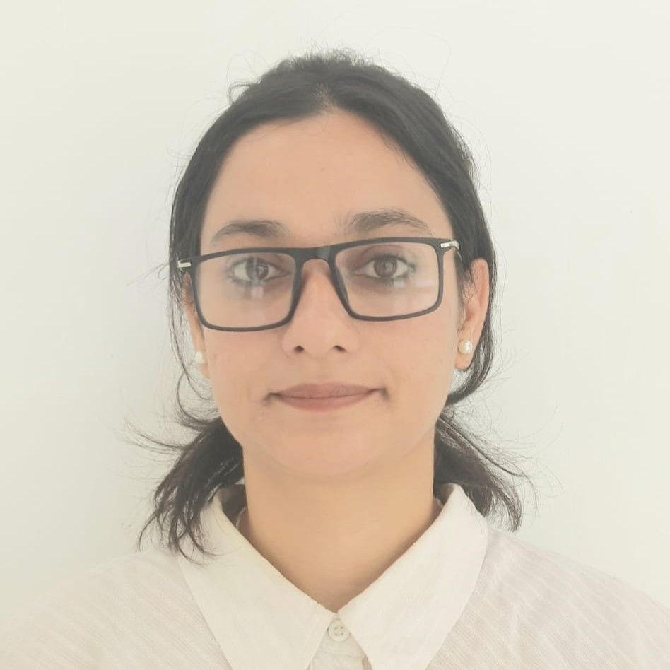
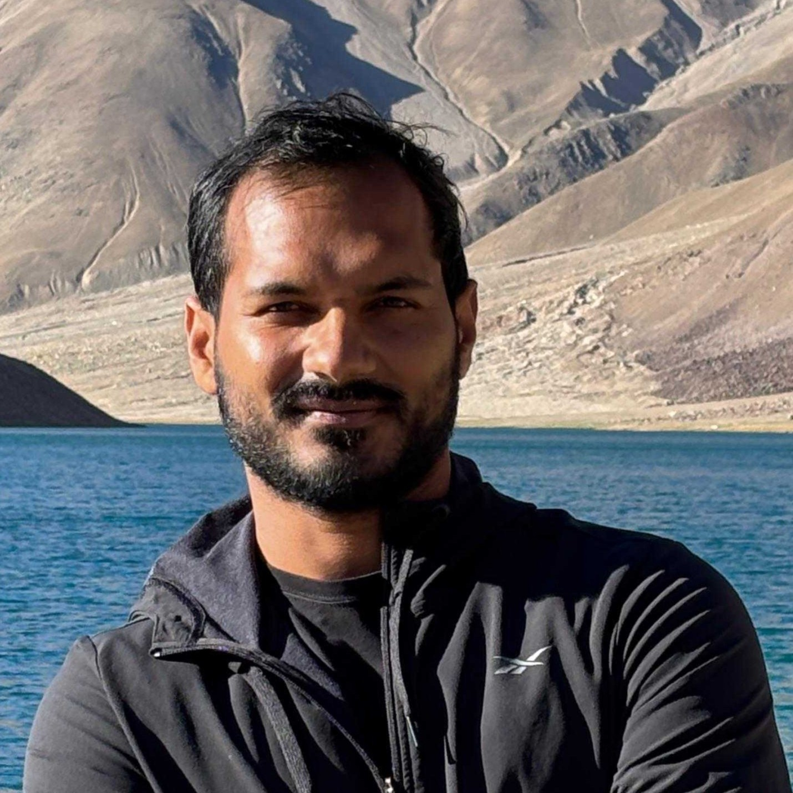

Tabasum Iqbal
Ph.D. Scholar
Research
Battery thermal management using immersion cooling

Abhinandan Bhardwaj
Ph.D. Scholar
Research
Manifold microchannels and Multi-layer Cold Plate Design

Amit Verma
M.Tech. Student
Research
Fuel cells thermal management